Web Reference
The live counterpart to brand-guide.md. Everything below is rendered from
assets/tokens/tenax.css and the self-hosted fonts — so if a token changes,
this page changes with it. Contrast ratios are computed in the browser from the
actual resolved values, not copied from a spreadsheet.
Four named colours from the identity guide. Ratios shown are against the current theme's page background.
Sampled from the guide's palette page. These supply surfaces, borders and muted text — so apps don't invent their own greys.
Urbanist for display, Sora for body and UI. Both are self-hosted variable fonts — no Typekit, no network dependency, ~80 KB total.
Stay ahead of evolving threats
Regular 400 · Medium 500 · Semibold 600 · Bold 700
Tenax Solutions' imagery combines technology, architecture, data, and authentic collaboration to communicate confidence and capability. Visuals should emphasize innovation, resilience, and proactive security rather than reactive problem-solving.
Four lockups × four colour variants. Inverse is the default on dark surfaces, Color on light. Black and White are single-colour variants for constrained reproduction — they drop the orange dot.
Orange is the identity's only accent and it is not a status colour. It marks brand and navigational emphasis: individual words, icons, active indicators, focus rings, small rules.
Signal Orange sits at hue 10°. Every accessible red lands within ~12° of it, so brand orange and error red cannot be told apart by colour. They are separated by form instead: orange is never filled, status is always filled.
Inline orange next to filled status badges — different shapes, no ambiguity: the scan found 3 new hosts and flagged the following.
Primary is a light fill, not orange — orange is reserved as an accent, and white text on orange fails contrast at 3.02:1. Provisional pending the homepage mockup.
Active item: orange text + orange underline. No fill.
Blue on Command Black is 1.76:1 — invisible. It only works as a filled field carrying light text.
This sentence is Sentinel Blue as body text. It is unreadable, on purpose.
assets/tokens/tenax.css and assets/fonts/ into your app.class="tenax" to <body> for the base layer.assets/favicon/ to your web root and link favicon.svg + favicon.ico.assets/logos/ — *-inverse.svg on dark.var(--tenax-*) only. Run tools/check-contrast.py if you add colours.